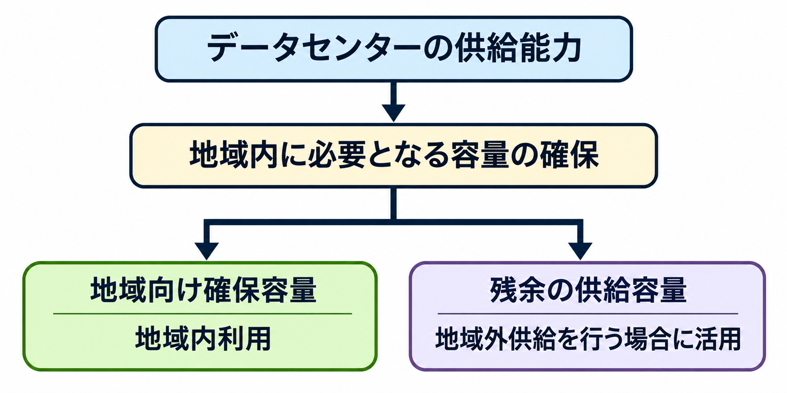
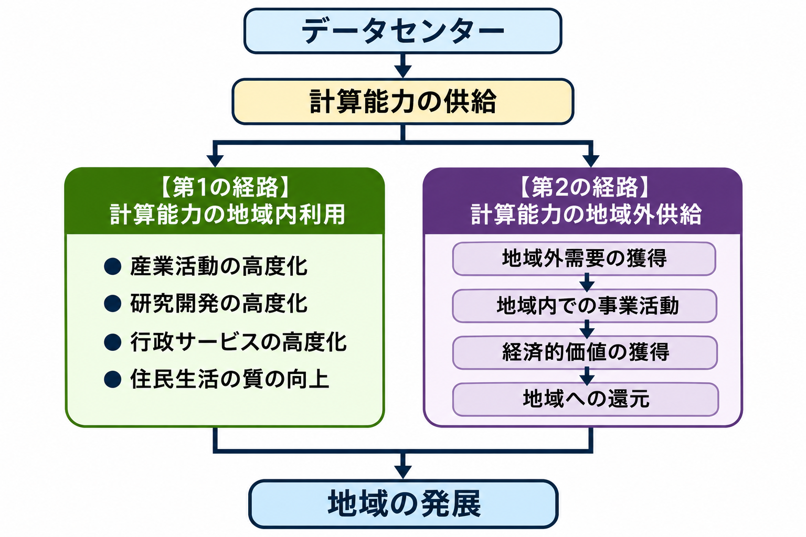

データセンターを地域資産に変える政策設計
第2章 データセンターが地域にもたらす二つの価値経路
2.1 計算能力の地域内利用
データセンターが供給する計算能力は、地域の産業や社会をどのように変えることができるのでしょうか。AIを開発する企業や大規模な計算処理を必要とする研究機関だけでなく、地域の企業、学校、病院、介護施設、行政機関、そして住民も、計算能力が生み出す価値を活用することができます。
経済産業省と総務省は、医療、教育、交通、農業など、さまざまな分野において、データを活用した新たな事業の形成や社会課題の解決が期待されるなか、データの収集、伝達、処理を担うデジタルインフラの重要性が高まっているとしています（経済産業省・総務省「デジタルインフラ（DC等）整備に関する有識者会合」、2024年10月4日更新）。
人口減少に伴う人手不足や公共サービスの維持といった課題に対しても、デジタル技術の活用が進められています。経済産業省が推進するデジタルライフライン全国総合整備では、自動運転やドローン物流、インフラ管理DXなどを対象に、デジタル技術を用いたサービスの社会実装に向けた基盤整備が進められています（経済産業省「第2期デジタルライフライン全国総合整備実現会議」、2026年11月26日確認）。
例えば、地域の人口が減少し、公共交通や物流サービスの維持が難しくなったとき、自動運転やドローン物流は、地域住民の移動や物資の輸送を支える新たな手段となる可能性があります。また、道路や上下水道などの公共インフラの管理にデータ分析やAIを活用することで、限られた人員で設備の状態を把握し、維持管理業務を高度化することも考えられます。
教育や医療、介護も、計算能力を活用できる領域です。文部科学省は2024年12月、初等中等教育段階における生成AIの利活用に関するガイドラインを改訂し、教職員の業務や児童生徒の学習活動における生成AIの活用について、基本的な考え方や留意点を示しています（文部科学省「学校現場における生成AIの利用について」、2024年12月26日公表資料）。
令和8年版厚生労働白書では、2040年頃の医療・介護の将来像として、ICTやAI、ロボットなどを活用したサービスの姿が示されています。診療や記録業務の支援、データの分析、センサーなどを用いた見守りは、医療・介護に従事する人の業務負担を軽減するとともに、地域住民が受けるサービスの充実にもつながる可能性があります（厚生労働省「令和8年版厚生労働白書」、2026年、123～124ページ）。
このように、計算能力の活用は、新たな産業を生み出すことだけを目的とするものではありません。地域にすでに存在する産業や社会活動を支え、その機能を維持・高度化するためにも利用することができます。
地域内での計算能力の活用領域と、そこから期待される価値を整理すると、次のようになります。
| 活用領域 | 計算能力の活用例 | 期待される価値 |
|---|---|---|
| 研究開発 | シミュレーション、データ解析、AI開発 | 研究開発能力の向上 |
| 産業活動 | データ分析、業務支援、AI関連サービスの開発 | 生産性・技術力の向上、新規事業の形成 |
| 行政・公共サービス | 公共インフラの管理、データ活用 | 公共サービスの高度化 |
| 医療・介護 | 診療・記録支援、データ分析、見守り支援 | 医療・介護サービスの充実 |
| 教育 | 生成AIを活用した学習・教育活動 | 教育活動の充実 |
| 交通・物流 | 自動運転、ドローン物流 | 移動・物流サービスの維持・高度化 |
出典：各省庁の公開資料を基にRapasAI Lab作成
これらは、データセンターが地域内に立地するだけで得られる効果ではなく、計算能力を地域内の活動に利用することによって生み出される価値です。地域内の計算需要が小規模であっても、住民の生活に欠かせないサービスや地域の重要な産業に活用することで、大きな社会的価値を生み出す可能性があります。
では、地域の企業や行政機関、住民は、どのような形で計算能力を利用するのでしょうか。
大学や研究機関、AI開発企業などでは、GPUなどの計算資源を利用して、自らシミュレーションやデータ解析、AIの開発を行うことがあります。Amazon Web Services（AWS）が提供する「Capacity Blocks for ML」は、機械学習などに使用するGPUベースの計算インスタンスを、指定した期間に利用するために予約できるサービスです（Amazon Web Services「Capacity Blocks for ML」、2026年11月26日確認）。
計算能力の利用には、こうした計算資源そのものを利用する形態だけでなく、アプリケーションなどのサービスを利用する形態もあります。米国国立標準技術研究所（NIST）によるクラウドコンピューティングの定義でも、計算資源やアプリケーションがサービスとして提供される仕組みが整理されています（National Institute of Standards and Technology「The NIST Definition of Cloud Computing（NIST SP 800-145）」、2011年9月）。
RapasAI Labでは、これらの利用形態を「直接利用」と「間接利用」に区分します。
| 利用形態 | 利用方法 | 利用主体の例 |
|---|---|---|
| 直接利用 | GPUなどの計算資源を利用して研究開発や計算処理を行う | 大学、研究機関、AI開発企業、企業の研究開発部門 |
| 間接利用 | AIサービス、業務システム、アプリケーションなどを利用する | 地域企業、行政、医療・介護機関、地域住民 |
出典：RapasAI Lab作成
直接利用と間接利用は、利用主体の業種によって決まるものではありません。例えば、ある企業が製品開発のためにGPUを利用するのと同時に、日常の業務では生成AIサービスを利用することもあります。
間接利用では、計算能力を確保するだけでなく、地域の企業や住民が必要とするサービスが提供されることが重要になります。計算資源を直接扱う技術を持たない企業や住民も、それぞれの事業や生活に適したサービスを利用することで、計算能力が生み出す価値を享受できるからです。
2.2 計算能力の地域外供給
地域内に大きな計算需要がなくても、データセンターを地域の発展につなげることはできるのでしょうか。計算能力は通信ネットワークを通じて離れた場所へ提供できるため、データセンター事業は、立地地域の人口や産業規模だけに依存せず、広い地域の需要を取り込むことができます（National Institute of Standards and Technology「The NIST Definition of Cloud Computing（NIST SP 800-145）」、2011年9月）。
例えば、人口が減少し、地域内の市場が縮小している自治体であっても、国内外の企業などが必要とする計算能力を供給することで、地域内に経済活動を形成することが可能です。
データセンター事業は、建物やサーバーに加え、電力設備、冷却設備、通信設備など、多様な設備を必要とする産業です。国際エネルギー機関（IEA）が2025年に公表した「Energy and AI」では、データセンターを構成するサーバー、ストレージ、ネットワーク設備、冷却設備、電源設備などと、それらの電力需要が整理されています（International Energy Agency「Energy and AI」、2025年4月10日）。
また、米国バージニア州の公的調査機関であるJoint Legislative Audit and Review Commission（JLARC）は、2024年に公表したデータセンター産業に関する報告書において、大規模な資本投資が経済効果の主な源泉となっていることを示しています。特に初期建設段階で大きな経済効果が生まれるのに対し、施設の運営段階では、建設段階ほど多くの直接雇用を必要としないという特徴があります（Joint Legislative Audit and Review Commission「Data Centers in Virginia」、2024年12月9日）。
企業誘致による地域の発展を考える際には、雇用の創出が重視されることが多くあります。データセンターの運営に必要となる人員が比較的少ないことは、雇用創出を重視する自治体にとって、誘致による効果を評価するうえで考慮すべき産業特性です。
しかし、人口減少や労働力不足が進む自治体にとっては、異なる見方もできます。大規模な設備投資を伴いながら、運営段階では多くの労働力を必要としない産業であることは、限られた地域の労働力に過度に依存せず、経済活動を形成できる可能性を持つということでもあります。
こうしたデータセンターの産業特性を地域政策に生かすためには、事業者が獲得する経済的利益と、立地自治体が獲得する財源との関係を理解する必要があります。
地域外からの計算需要によってデータセンター事業が成立し、設備への投資や事業活動が行われることで、地域内には課税対象となる資産や事業活動が形成されます。自治体は、これらに対する課税などを通じて財源を獲得することができます。
地域外の計算需要
↓
地域内でのデータセンター事業の成立・拡大
↓
設備投資・事業活動
↓
自治体の税収等データセンター事業に関連する主要な市町村税には、固定資産税と法人市町村民税があります。地方税法に基づく基本的な課税の仕組みは、次のとおりです。
| 税目 | 課税対象・仕組み |
|---|---|
| 固定資産税 | 土地、家屋、課税対象となる償却資産 |
| 法人市町村民税 | 均等割、法人税割 |
出典：地方税法（昭和25年法律第226号）を基にRapasAI Lab作成
固定資産税は、計算能力の販売額に直接課される税ではなく、課税対象となる土地、家屋、償却資産の評価額などに基づいて課税されます。法人市町村民税についても、均等割と法人税割による課税の仕組みがあり、データセンター事業者の売上高がそのまま自治体の税収になるわけではありません（地方税法（昭和25年法律第226号））。
さらに、自治体の財政を考える際には、地方税収と一般財源の関係にも目を向ける必要があります。一般財源とは、使途が特定されず、自治体がその行政需要に応じて活用できる財源であり、地方税や地方譲与税、普通交付税などが含まれます（総務省統計局・e-Stat「D 行政基盤」、2026年11月26日確認）。
地方交付税制度では、自治体の標準的な財政需要を示す基準財政需要額と、標準的な財政収入を示す基準財政収入額を用いて、普通交付税が算定されます。地方税収の増加は基準財政収入額の算定にも関係するため、普通交付税の交付額に影響を与える場合があります（地方交付税法（昭和25年法律第211号）、第10条、第11条、第14条）。
そのため、データセンターの立地によって増加する地方税収と、自治体が新たに活用できる一般財源の増加額は、必ずしも一致しません。普通交付税の交付状況や税制上の措置、データセンターの受け入れに伴う自治体側の支出などによって、地域の発展に活用できる財源は異なります。
自治体がデータセンターによる経済活動から財源を獲得した場合、その財源を何に活用するのかは、地域の発展の方向性を決める重要な政策判断となります。
企業誘致や研究開発支援に財源を投入し、新たな産業の形成を目指すこともできます。また、既存の地域産業を支援し、その事業の維持や高度化につなげることも考えられます。
産業政策だけでなく、教育、医療、介護、福祉、交通、子育て、生活支援など、住民の生活に関わる政策へ財源を投入することもできます。人口が減少する地域において、必要な医療や介護サービスを維持し、移動手段を確保し、住民が安心して暮らし続けられる生活環境を整えることも、地域の発展の一つの姿です。
RapasAI Labが提案する計算能力の地域外供給という価値経路は、データセンター事業から得られる経済的価値を、自治体が目指す地域の将来像に結び付けるものです。
さらに、地域への還元は、必ずしも税収などの金銭的な価値を介する必要はありません。計算能力の提供によって生み出されるサービスそのものを、地域へ還元することも考えられます。
例えば、地域のデータセンターが地域外のAIサービス事業者に計算能力を提供する場合、その対価の一部を金銭ではなく、地域向けのAIサービス利用権として受け取る仕組みです。
地域外のAIサービス事業者への計算能力提供
↓
地域向けAIサービス利用権の獲得
↓
地域住民・地域事業者への還元この利用権を地域住民や地域事業者に還元することで、生成AIなどのサービスを無料または割引料金で利用できる環境を整えることが考えられます。住民は日常生活や学習に、地域事業者は業務や事業活動にAIサービスを活用することができます。
これは、事業者間の合意や自治体との連携を前提とするRapasAI Lab独自の政策構想であり、現行制度によって自治体に付与されている権利ではありません。地域外に計算能力を供給することで生み出された価値を、地域の企業や住民が利用できるサービスという形で還元する考え方です。
2.3 地域優先利用権と計算能力の配分
自治体が計算能力の地域内利用を政策として選択するのであれば、地域の企業や研究機関、行政機関などが、必要とする計算能力を継続的に利用できる環境を整えることが重要になります。
例えば、地域の企業が計算能力を活用した製品開発や事業活動を計画していたとしても、必要な時期に計算能力を利用できるかどうかが分からなければ、事業計画を立てることは難しくなります。行政や医療、介護などの分野でも、計算能力に支えられたサービスを継続的に提供するためには、安定した利用環境が必要になります。
そこでRapasAI Labが提案するのが、地域優先利用権です。地域に必要となる計算能力を確保し、地域内の利用主体が継続的に利用できるようにするための政策手段です。
地域優先利用権は、現行法によってデータセンターの立地自治体に当然に付与される権利ではなく、事業者との合意などを通じて確保する利用上の権利に関する政策概念です。
計算能力を事前に確保することや、特定の利用者に対して利用上の優先度を設定することは、既存の計算サービスや制度においても行われています。
OpenAIが提供する「Reserved Tier」は、企業顧客が特定のAIモデルのAPI処理容量を事前に購入することで、予約した範囲内の処理容量を確保できるサービスです。需要が集中した場合にも、予約された範囲内の処理容量が保証されます。
OpenAIの開発者向けドキュメントによると、このサービスは共有インフラ上で提供され、需要が集中した場合には予約されたリクエストが従量課金のリクエストより優先されます。特定のGPUやサーバーを専有するのではなく、AIモデルのAPI処理容量を確保する仕組みです（OpenAI「Reserved Tier for API Customers」「Reserved Tier」、2026年11月26日確認）。
AWSでは、計算資源そのものを予約するサービスが提供されています。「EC2 On-Demand Capacity Reservations」では、特定のAvailability Zone（アベイラビリティゾーン）におけるEC2インスタンスの計算容量を予約できます。また、「Capacity Blocks for ML」では、GPUベースの計算インスタンスなどを指定した期間に利用するために予約することができます（Amazon Web Services「Reserve compute capacity with EC2 On-Demand Capacity Reservations」「Capacity Blocks for ML」、2026年11月26日確認）。
日本では、産業技術総合研究所が運用するAI開発向け計算基盤ABCI（AI Bridging Cloud Infrastructure）に、地域を対象とした利用優先度の設定を行う制度があります。
ABCIの「地方優先枠」は、東京圏外におけるAI開発事業者などの支援やAI開発人材の育成を目的とする制度です。主たる事務所が東京圏外に所在する利用法人による利用グループを対象とし、対象サービスにおけるジョブの実行優先度を相対的に高く設定します。
ABCIの地方優先枠では、一定量の専用計算容量を利用者に割り当てるのではなく、他の利用者との関係において実行優先度を高めています。リソースの逼迫などによって他の利用グループへの悪影響が予見される場合には、優先機能が無効化される可能性があります（産業技術総合研究所・ABCI「地方優先枠」、2026年11月26日確認）。
これらのサービス・制度が確保または優先する対象と、その仕組みを整理すると、次のようになります。
| サービス・制度 | 確保・優先する対象 | 仕組み |
|---|---|---|
| OpenAI Reserved Tier | 特定モデルのAPI処理容量 | 予約購入による処理容量の確保 |
| AWS EC2 On-Demand Capacity Reservations | EC2インスタンスの計算資源 | 特定のAvailability Zoneにおける容量予約 |
| AWS Capacity Blocks for ML | GPUなどの計算資源 | 指定期間の計算資源の予約 |
| ABCI地方優先枠 | 対象利用グループのジョブ実行 | 相対的に高い実行優先度の設定 |
出典：OpenAI、Amazon Web Services、ABCIの公開資料を基にRapasAI Lab作成
このように、サービスの処理容量を保証する仕組み、計算資源を予約する仕組み、利用者の実行優先度を高める仕組みは、それぞれ異なります。これらはRapasAI Labが提案する地域優先利用権そのものの既存事例ではありませんが、その構想の技術的・商業的な実現可能性を考えるうえで参考となる仕組みです。
では、地域内利用と地域外供給の双方を行う場合、データセンターの計算能力をどのように配分するのでしょうか。
RapasAI Labが提案する基本原則は、地域内利用を政策として選択した場合には、地域に必要となる計算能力を先に確保し、そのうえで残る供給能力を地域外供給に活用するというものです。

出典：RapasAI Lab作成
地域内に必要となる計算能力を確保することは、データセンターの計算能力のすべてを地域内で利用することを意味するものではありません。地域内で必要となる容量を確保したうえで、残る供給容量を地域外の需要に向けることができます。
地域内利用のみを目的としてデータセンターを整備するのであれば、地域外供給を行う必要はありません。また、地域外供給によって経済的価値を獲得し、それを地域へ還元する政策を選択するのであれば、地域優先利用権の設定は必須ではありません。
地域優先利用権は、自治体が計算能力の地域内利用を政策として選択した場合に、その政策を支えるための手段です。
2.4 二つの価値経路による地域発展モデル
RapasAI Labが提案する地域発展モデルでは、データセンターから地域が価値を獲得する経路を、計算能力の地域内利用と地域外供給の二つに整理します。

出典：RapasAI Lab作成
この二つの経路は、すべての地域が同時に採用しなければならないものではありません。地域内利用のみを選択することも、地域外供給のみを選択することも、双方を組み合わせることもできます。
また、二つの経路は完全に独立しているわけではありません。地域内利用に伴う事業活動からも税収や地域経済への波及効果が生じます。地域外供給の対価として獲得したAIサービス利用権を地域内で活用するように、二つの経路が接続することもあります。
このモデルは、経済的価値と社会的価値の発生源を厳密に二分するものではなく、地域がデータセンターから価値を獲得するための主要な経路を示したものです。
どの経路を選択し、どのように組み合わせるのか。それは、データセンターの規模だけで決まるものではなく、地域がどのような将来を目指すのかによって異なります。
参考文献
経済産業省・総務省「デジタルインフラ（DC等）整備に関する有識者会合」2024年10月4日更新
https://www.meti.go.jp/policy/mono_info_service/joho/conference/digital_infrastructure.html
経済産業省「第2期デジタルライフライン全国総合整備実現会議」2026年11月26日確認
https://www.meti.go.jp/policy/mono_info_service/digital_architecture/lifeline.html
文部科学省「学校現場における生成AIの利用について」2026年11月26日確認
参照資料：初等中等教育段階における生成AIの利活用に関するガイドライン（Ver.2.0）、2024年12月26日
https://www.mext.go.jp/zyoukatsu/ai/
厚生労働省「令和8年版厚生労働白書 第1部 第2章 2040年に向けた、医療・介護・障害福祉の現場における取組み―テクノロジー（ICT、AI、ロボット等）の活用による生産性向上―」2026年
参照箇所：123～124ページ
https://www.mhlw.go.jp/wp/hakusyo/kousei/26/dl/1-02.pdf
Peter Mell, Timothy Grance, National Institute of Standards and Technology（NIST）「The NIST Definition of Cloud Computing（NIST SP 800-145）」2011年9月
https://csrc.nist.gov/pubs/sp/800/145/final
International Energy Agency（IEA）「Energy and AI」2025年4月10日
https://www.iea.org/reports/energy-and-ai
Joint Legislative Audit and Review Commission（JLARC）「Data Centers in Virginia」2024年12月9日
https://jlarc.virginia.gov/landing-2024-data-centers-in-virginia.asp
e-Gov法令検索「地方税法（昭和25年法律第226号）」1950年7月31日公布
https://laws.e-gov.go.jp/law/325AC0000000226
e-Gov法令検索「地方交付税法（昭和25年法律第211号）」1950年5月30日公布
参照条文：第10条、第11条、第14条
https://laws.e-gov.go.jp/law/325AC0000000211
総務省統計局、政府統計の総合窓口（e-Stat）「社会・人口統計体系 統計でみる都道府県・市区町村のすがた D 行政基盤」2026年11月26日確認
https://www.e-stat.go.jp/koumoku/koumoku_teigi/D
OpenAI「Reserved Tier for API Customers」2026年11月26日確認
https://openai.com/api-reserved-tier/
OpenAI「Reserved Tier」2026年11月26日確認
https://developers.openai.com/api/docs/guides/reserved-tier
Amazon Web Services「Reserve compute capacity with EC2 On-Demand Capacity Reservations」2026年11月26日確認
https://docs.aws.amazon.com/AWSEC2/latest/UserGuide/ec2-capacity-reservations.html
Amazon Web Services「Capacity Blocks for ML」2026年11月26日確認
https://docs.aws.amazon.com/AWSEC2/latest/UserGuide/ec2-capacity-blocks.html
国立研究開発法人産業技術総合研究所、ABCI「地方優先枠」2026年11月26日確認
https://abci.ai/ja/regional_dev_support/